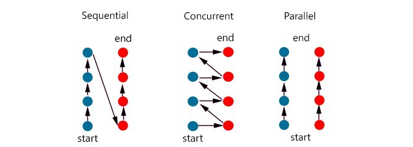
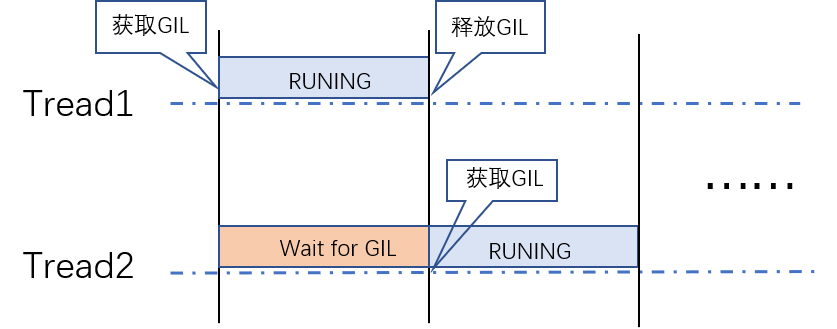

进程(process)和线程(thread)是操作系统的基本概念，是操作系统程序运行的基本单元，本文简要介绍进程和线程的概念以及Python中的多进程和多线程。
进程、线程
什么是进程
- 进程是执行中的程序，是资源分配的最小单位：操作系统以进程为单位分配存储空间，进程拥有独立地址空间、内存、数据栈等
- 操作系统管理所有进程的执行，分配资源
- 可以通过fork或 spawn的方式派生新进程，新进程也有自己独立的内存空间
- 进程间通信方式（IPC，Inter-Process Communication）共享信息，实现数据共享，包括管道、信号、套接字、共享内存区等。
什么是线程
- 线程是CPU调度的的最小单位
- 一个进程可以有多个线程
- 同进程下执行，并共享相同的上下文
- 线程间的信息共享和通信更加容易
- 多线程并发执行
- 需要同步原语
并发、并行

并发通常应用于 I/O 操作频繁的场景，并行则更多应用于 CPU heavy 的场景。
并发
并发(concurrency)，指同一时刻只能有一条指令执行，多个线程的对应的指令被快速轮换地执行，线程/任务之间会互相切换。
- 处理器先执行线程 A 的指令一段时间，再执行线程 B 的指令一段时间，再切回到线程 A，快速轮换地执行。
- 处理器切换过程中会进行上下文的切换操作，进行多个线程之间切换和执行，这个切换过程非常快，使得在宏观上看起来多个线程在同时运行。
- 每个线程的执行会占用这个处理器一个时间片段，同一时刻，其实只有一个线程在执行。
并行
并行(parallel) 指同一时刻，有多条指令在多个处理器上同时执行
不论是从宏观上还是微观上，多个线程都是在同一时刻一起执行的。
并行只能在多处理器系统中存在，如果只有一个核就不可能实现并行。并发在单处理器和多处理器系统中都是可以存在的，一个核就可以实现并发。
注意：具体是并发还是并行取决于操作系统的调度。
多线程适用场景
多线程/多进程是解决并发问题的经典模型之一。
在一个程序进程中，有一些操作是比较耗时或者需要等待的，比如等待数据库的查询结果的返回，等待网页结果的响应。这个线程在等待的过程中，处理器是可以执行其他的操作的，从而从整体上提高执行效率。
比如网络爬虫，在向服务器发起请求之后，有一段时间必须要等待服务器的响应返回，这种任务属于 IO 密集型任务。对于这种任务，启用多线程可以在某个线程等待的过程中去处理其他的任务，从而提高整体的爬取效率。
还有一种任务叫作计算密集型任务，或者称为CPU 密集型任务。任务的运行一直需要处理器的参与。如果使用多线程，一个处理器从一个计算密集型任务切换到另一个计算密集型任务，处理器依然不会停下来，并不会节省总体的时间，如果线程数目过多，进程上下文切换会占用大量的资源，整体效率会变低。
所以，如果任务不全是计算密集型任务，我们可以使用多线程来提高程序整体的执行效率。尤其对于网络爬虫这种 IO 密集型任务来说，使用多线程会大大提高程序整体的爬取效率，多线程只适合IO 密集型任务。
Python GIL
由于 Python 中 GIL 的限制，导致不论是在单核还是多核条件下，在同一时刻只能运行一个线程，导致 Python 多线程无法发挥多核并行的优势。
GIL 全称为 Global Interpreter Lock（全局解释器锁)，是 Python 解释器 CPython 中的一个技术术语，是Python之父为了数据安全而设计的。
CPython 使用引用计数来管理内存，所有 Python 脚本中创建的实例，都会有一个引用计数，来记录有多少个指针指向它。当引用计数只有 0 时，则会自动释放内存。每隔一段时间，Python 解释器就会强制当前线程去释放 GIL，Python 3 以后版本的间隔时间是 15 毫秒。
在 Python 多线程下，每个线程轮流执行：
- 获取 GIL
- 执行对应线程的代码
- 释放 GIL

某个线程想要执行，必须先拿到 GIL，并且在一个 Python 进程中，GIL 只有一个，导致即使在多核的条件下，同一时刻也只能执行一个线程。每一个线程执行完一段后，会释放 GIL，以允许别的线程开始利用资源。
Python多线程、多进程实例：CPU 密集型任务
单线程
执行一个CPU 密集型任务：
1 | import time |
输出：1
2
3
4主进程: 10104
当前进程: 10104
当前进程: 10104
耗时10.829032897949219秒
多线程
1 | import os |
- start()：启动线程
- join()：等待子线程结束后主程序才退出，便于计算所有进程执行时间。
输出：1
2
3
4主线程: 1196
子线程 Thread-1:1196 - 任务1
子线程 Thread-2:1196 - 任务2
耗时10.808091640472412秒
可以发现多线程对CPU 密集型任务性能没有提升效果。
多进程
1 | from multiprocessing import Process |
输出：1
2
3
4父进程: 22636
子进程: 18072 - 任务1
子进程: 9580 - 任务2
耗时6.264241933822632秒
也可以使用Pool类创建多进程1
2
3
4
5
6
7
8
9
10
11
12
13
14
15
16
17
18
19
20from multiprocessing import Pool, cpu_count
import os
import time
def cpu_bound_task(n,i):
print(f'子进程: {os.getpid()} - 任务{i}')
while n > 0:
n -= 1
if __name__=='__main__':
print(f"CPU内核数:{cpu_count()}")
print(f'父进程: {os.getpid()}')
start = time.time()
p = Pool(4)
for i in range(2):
p.apply_async(cpu_bound_task, args=(100000000,i))
p.close()
p.join()
end = time.time()
print(f"耗时{end - start}秒")
输出：1
2
3
4
5CPU内核数:8
父进程: 18616
子进程: 21452 - 任务0
子进程: 16712 - 任务1
耗时5.928101301193237秒
Python多线程、多进程实例：IO密集型任务
单线程
IO 密集型任务：
1 | def io_bound_task(self, n, i): |
输出：
1 | 主进程: 2780 |
多线程
1 |
|
输出：
1 | CPU内核数:8 |
可以看出对于IO密集型任务，Python多线程具有显著提升。
多进程
1 | print(f'父进程: {os.getpid()}') |
输出：
1 | 父进程: 12328 |
协程
IO型任务还可以使用协程，协程比线程更加轻量级，一个线程可以拥有多个协程，协程在用户态执行，完全由程序控制。一般来说，线程数量越多，协程性能的优势越明显。这里就不介绍Python协程了，下面Python代码是协程的其中一种实现方式：
1 | import asyncio |
输出：
1 | 子进程: 5436 - 任务1 |
总结
Python 由于GIL锁的存在，无法利用多进程的优势，要真正利用多核，可以重写一个不带GIL的解释器， 比如JPython（Java 实现的 Python 解释器）。
某些Python 库使用C语言实现，例如 NumPy 库不受 GIL 的影响。在实际工作中，如果对性能要求很高，可以使用C++ 实现，然后再提供 Python 的调用接口。另外Java语言也没有GIL限制。
对于多线程任务，如果线程数量很多，建议使用Python协程，执行效率比多线程高。
本文标题:Python多线程与多进程
文章作者:hiyo
文章链接:https://hiyongz.github.io/posts/python-notes-for-multi-process/
许可协议:本博客文章除特别声明外，均采用CC BY-NC-ND 4.0 许可协议。转载请保留原文链接及作者。